<!doctype html>
<html lang="en">
<head>
  <meta charset="utf-8">
  <meta name="viewport" content="width=device-width, initial-scale=1">
  <title>arxiv digest — 2026-05-18</title>
  <style>
:root {
  --bg: #ffffff;
  --fg: #1f2328;
  --muted: #59636e;
  --border: #d0d7de;
  --card: #f6f8fa;
  --link: #0969da;
}
body {
  max-width: 980px;
  margin: 0 auto;
  padding: 2rem 1rem 5rem;
  font-family: -apple-system, BlinkMacSystemFont, "Segoe UI", Helvetica, Arial, sans-serif;
  line-height: 1.55;
  color: var(--fg);
  background: var(--bg);
}
a { color: var(--link); }
img { max-width: 100%; height: auto; }
pre, code { background: var(--card); border-radius: 6px; }
pre { padding: 1rem; overflow-x: auto; }
blockquote { border-left: 4px solid var(--border); padding-left: 1rem; color: var(--muted); }
details { margin: 0.6rem 0; }
summary { cursor: pointer; font-weight: 600; }
.paper-figures-scroll {
  display: flex;
  gap: 1rem;
  overflow-x: auto;
  overscroll-behavior-x: contain;
  padding: 0.75rem 0.25rem 1rem;
  margin: 1rem 0 1.25rem;
  border-top: 1px solid var(--border);
  border-bottom: 1px solid var(--border);
  scroll-snap-type: x proximity;
}
.paper-figure-card {
  flex: 0 0 min(260px, 72vw);
  scroll-snap-align: start;
  background: var(--card);
  border: 1px solid var(--border);
  border-radius: 12px;
  padding: 0.55rem;
}
.paper-figure-card img {
  display: block;
  width: 100%;
  max-height: 240px;
  object-fit: contain;
  background: white;
  border-radius: 8px;
}
.paper-figure-caption {
  display: block;
  margin-top: 0.5rem;
  color: var(--muted);
  font-size: 0.85rem;
}
.figure-strip-hint {
  color: var(--muted);
  font-size: 0.9rem;
  margin-bottom: -0.3rem;
}
</style>
  <!-- MathJax: renders $...$ inline math and $$...$$ display math, plus
       \(...\) and \[...\]. Loaded from the official CDN; works offline
       once cached. Configured to skip code/pre blocks so arxiv IDs that
       look like dollar amounts don't get mangled. -->
  <script>
    window.MathJax = {
      tex: {
        inlineMath: [['$', '$'], ['\\(', '\\)']],
        displayMath: [['$$', '$$'], ['\\[', '\\]']],
        processEscapes: true,
        processEnvironments: true
      },
      options: {
        skipHtmlTags: ['script', 'noscript', 'style', 'textarea', 'pre', 'code'],
        ignoreHtmlClass: 'tex2jax_ignore',
        processHtmlClass: 'tex2jax_process'
      }
    };
  </script>
  <script id="MathJax-script" async
    src="https://cdn.jsdelivr.net/npm/mathjax@3/es5/tex-chtml.js"></script>
</head>
<body>
<header style="background-color: #333; color: white; padding: 15px; margin-bottom: 20px;">
  <h1 style="margin: 0; font-size: 24px;">
    <a href="https://ochelpan.github.io/arXiv_clean/" style="color: white; text-decoration: none;">Main</a>
  </h1>
</header>

<h1>Daily arXiv Report</h1>

<hr>
<p>
<a href="index.html">← Index</a>
 · <a href="papers_06.html">← Previous</a>
</p>
<hr>

<h2>Papers 121–126</h2>
<p><a id="paper-2605.15381"></a></p>
<h3 id="chemical-origins-of-non-bonded-interactions-within-and-between-solids"><a href="http://arxiv.org/abs/2605.15381v1">Chemical Origins of Non-Bonded Interactions Within and Between Solids</a></h3>
<p><strong>Authors:</strong> Paul J. Robinson, Adam Rettig, Hieu Q. Dinh, Anton Z. Ni, Joonho Lee<br>
<strong>Type:</strong> theory · <strong>Category:</strong> other · <strong>PDF:</strong> <a href="https://arxiv.org/pdf/2605.15381v1">https://arxiv.org/pdf/2605.15381v1</a><br>
<strong>Analysis basis:</strong> full PDF text, analyzed in chunks</p>
<div class="figure-strip-hint">↔ Scroll figures horizontally</div>
<div class="paper-figures-scroll">
<figure class="paper-figure-card">
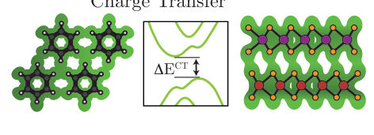
<figcaption class="paper-figure-caption"><b>Fig 1.</b> FIG. 1. Flowchart of the solid-state ALMO-EDA fam- ily of methods. On the left, the scheme preserves the iso- lated character of each molecule until the CT step, whereas on the right, it allows charge to redistribute between unit cells within the same subsystem at every step of the EDA.</figcaption>
</figure>
<figure class="paper-figure-card">
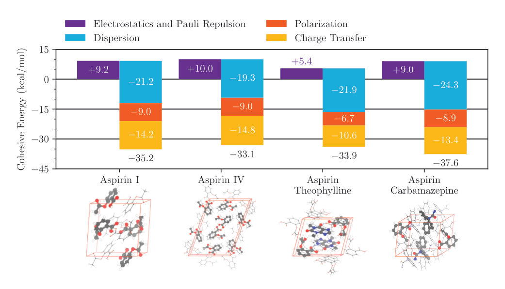
<figcaption class="paper-figure-caption"><b>Fig 2.</b> FIG. 2. ALMO-EDA applied to molecular crystals. The diagrams below show the unit cell (red lines) with the subsystems shown by large atoms and the periodic repeats of the subsystems shown by small atoms.</figcaption>
</figure>
<figure class="paper-figure-card">
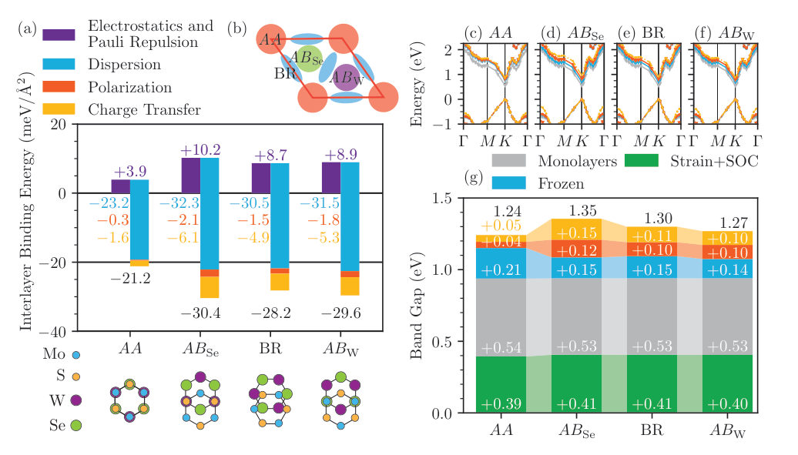
<figcaption class="paper-figure-caption"><b>Fig 3.</b> FIG. 3. ALMO-EDA applied to the MoS2/WSe2 heterobilayer. (a) Interlayer binding energy across the structures in a moir´e potential. (b) Cartoon of a moir´e heterobilayer showing the connectivity between regions. (c-f) EDA decomposed band structures across the structures. (g) Band-gap decomposition, including a correction term for the spin-orbit coupling (SOC) and strain of the monolayers.</figcaption>
</figure>
<figure class="paper-figure-card">
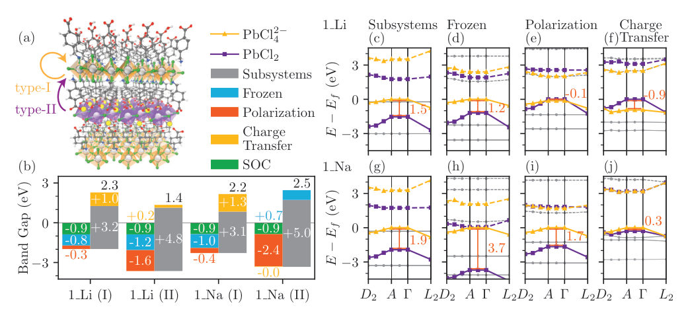
<figcaption class="paper-figure-caption"><b>Fig 4.</b> FIG. 4. ALMO-EDA applied to layered perovskite heterostructures. (a) Schematic of the competing type-I and type-II quantum wells. (b) Band-gap decompositions for 1 Li and 1 Na. (c)-(f) Band structures and densities of states for 1 Li across the EDA steps. (g)-(j) Band structures and densities of states for 1 Na across the EDA steps. In (c)-(j), only the highest occupied (solid lines) and lowest unoccupied bands (dashed lines) are shown for each subsystem. The gray lines denote the molecular subsystems. The red annotated values indicate the difference between the valence band maxima of PbCl4 2– and PbCl2.</figcaption>
</figure>
</div>
<p><strong>Summary.</strong> This work introduces a generalized energy decomposition analysis (ALMO-EDA) to dissect non-bonded interactions in complex solids. By separating total energies into contributions from frozen interactions, polarization, and charge transfer, the authors provide a chemically transparent method. This allows researchers to understand <em>why</em> materials are stable or how their electronic properties change upon structural modification or elemental substitution.</p>
<p><strong>Why it may be interesting.</strong> While focused on solid-state chemistry, the rigorous decomposition of interactions into polarization and charge transfer components provides a highly detailed, physically transparent language for analyzing electronic structure changes in extended systems, which is valuable for understanding coupling mechanisms in quantum materials.</p>
<details>
<summary>Detailed structure</summary>
<p><strong>Main problem.</strong> The chemical origins of non-bonded interactions governing the structure and stability of solid-state materials are difficult to resolve from total energy calculations alone.</p>
<p><strong>Main result.</strong> The authors developed a framework that successfully decomposes interaction energies into chemically intuitive contributions (frozen, polarization, charge transfer), allowing for the mechanistic understanding of material properties.</p>
<p><strong>Method.</strong> The study generalizes the absolutely localized molecular orbital energy decomposition analysis (ALMO-EDA) to periodic systems at the DFT level.</p>
<p><strong>Model / system.</strong> The framework is applied to diverse systems, including molecular crystals (e.g., Aspirin polymorphs), moiré heterobilayers (e.g., MoS2/WSe2), and layered perovskite heterostructures.</p>
<p><strong>Key observables.</strong> Lattice-formation energies, interlayer binding energies, band-structure changes, and the decomposed energy contributions ($E_{	ext{frz}}, E_{	ext{pol}}, E_{	ext{ct}}$).</p>
<p><strong>Important parameters / regimes.</strong> Interlayer separation ($    ext{\AA}$), band gap ($    ext{eV}$), and the relative contributions of dispersion, polarization, and charge transfer.</p>
<p><strong>Assumptions / limitations.</strong> The analysis relies on DFT-based ALMO-EDA, which assumes a block-diagonal MO coefficient matrix for the decomposition formalism.</p>
<p><strong>Figures summary.</strong> Figures illustrate the application of ALMO-EDA to show energy decompositions for molecular crystals (Aspirin) and the evolution of band structures/binding energies in moiré heterobilayers and perovskites.</p>
<p><strong>Paper structure.</strong> The paper establishes the need for chemical decomposition, details the generalized ALMO-EDA formalism for periodic systems, and then applies this framework sequentially to molecular crystals, twisted bilayers, and perovskite heterostructures to derive specific physical insights.</p>
</details>
<details>
<summary>Abstract</summary>
<p>Non-bonded interactions govern structure, stability, and function across a wide range of solid-state materials, yet their chemical origins are often difficult to resolve from total energies alone. Here we generalize absolutely localized molecular orbital energy decomposition analysis to quantify and interpret non-bonded interactions within and between solids at the density functional theory level. Across molecular crystals, moiré heterobilayers, and layered perovskite heterostructures, this framework separates lattice-formation energies, interlayer binding energies, and band-structure changes into chemically intuitive contributions from frozen interactions, polarization, and charge transfer. The analysis reveals how dispersion controls polymorph stability in pharmaceutical crystals, how local stacking modulates interlayer coupling in MoS2/WSe2, and how alkali-cation substitution switches the quantum-well character of layered perovskite heterostructures. By connecting emergent solid-state properties to microscopic interaction mechanisms, this framework provides a chemically transparent basis for understanding and designing complex materials.</p>
</details>
<p><sub><a href="#top">↑ back to top</a></sub></p>

<p><a id="paper-2605.16038"></a></p>
<h3 id="interfacial-reconstructions-and-engineering-in-iii-vii-vi-core-shell-quantum-dots"><a href="http://arxiv.org/abs/2605.16038v1">Interfacial Reconstructions and Engineering in III-V@II-VI Core-Shell Quantum Dots</a></h3>
<p><strong>Authors:</strong> Jordi Llusar, Abdessamad El Adel, Luca De Trizio, Liberato Manna, Zeger Hens, Ivan Infante<br>
<strong>Type:</strong> theory · <strong>Category:</strong> other · <strong>PDF:</strong> <a href="https://arxiv.org/pdf/2605.16038v1">https://arxiv.org/pdf/2605.16038v1</a><br>
<strong>Analysis basis:</strong> full PDF text, analyzed in chunks</p>
<div class="figure-strip-hint">↔ Scroll figures horizontally</div>
<div class="paper-figures-scroll">
<figure class="paper-figure-card">
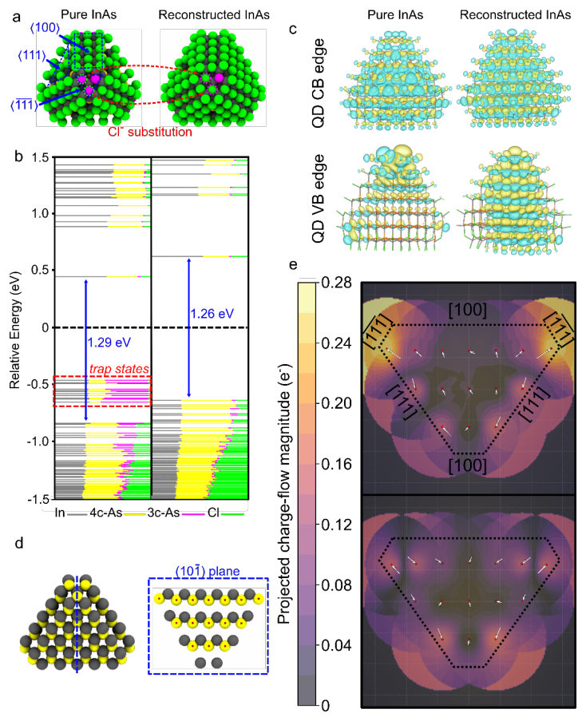
<figcaption class="paper-figure-caption"><b>Fig 1.</b> Figure 1. Electronic structure and charge accumulation in InAs QD models. (a) Atomic structures of pure (left)</figcaption>
</figure>
<figure class="paper-figure-card">
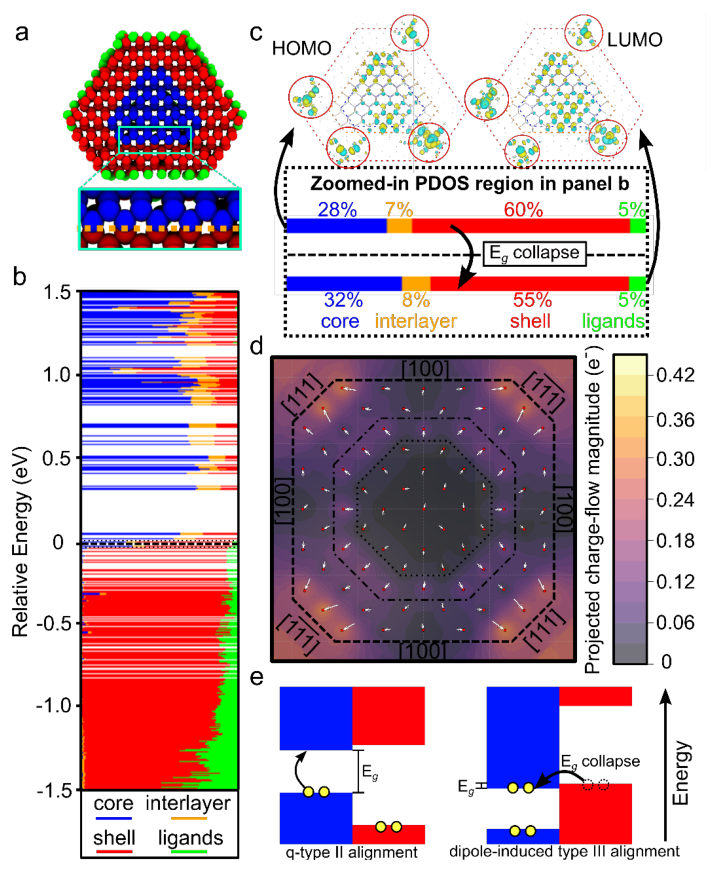
<figcaption class="paper-figure-caption"><b>Fig 2.</b> Figure 2. Electronic and charge-flow features of the InAs@CdSe QD model with an abrupt core-shell interface</figcaption>
</figure>
<figure class="paper-figure-card">
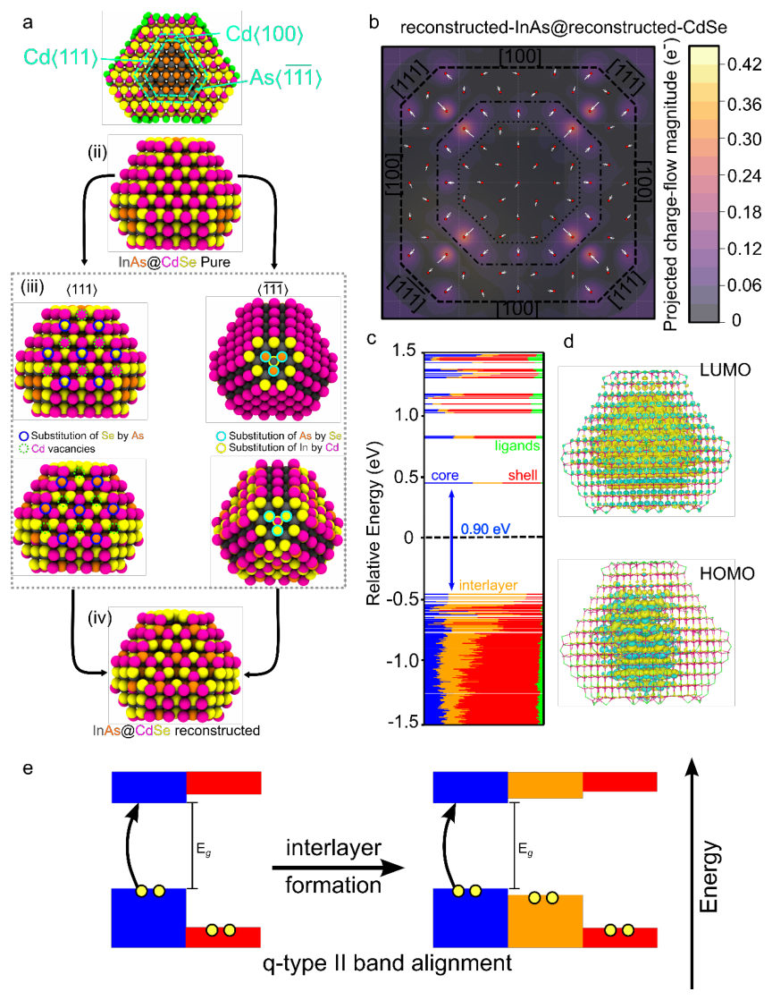
<figcaption class="paper-figure-caption"><b>Fig 3.</b> Figure 3. Electronic structure of a InAs@CdSe core@shell QD model with interface reconstructions. (a) Atomistic</figcaption>
</figure>
<figure class="paper-figure-card">
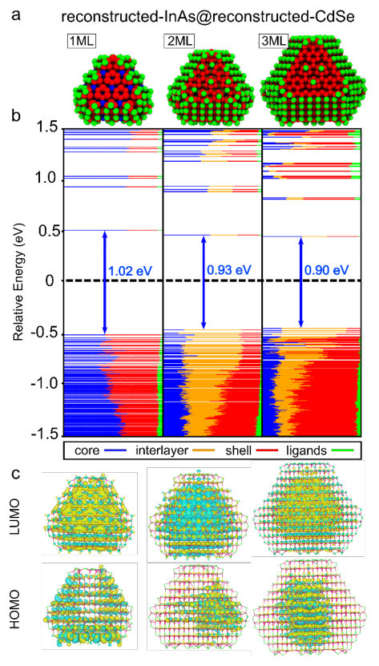
<figcaption class="paper-figure-caption"><b>Fig 4.</b> Figure 4. Evolution of the electronic structure and frontier orbitals in InAs@CdSe core@shell QD models with</figcaption>
</figure>
</div>
<p><strong>Summary.</strong> This theoretical study uses DFT to model InAs@CdSe quantum dots, demonstrating that the interface between different semiconductor materials is critical for optoelectronic performance. The authors show that abrupt interfaces create detrimental charge imbalances, but by modeling chemical reconstruction or alloying at the interface, they can restore the desired electronic band alignment, leading to defect-free quantum confinement.</p>
<p><strong>Why it may be interesting.</strong> The detailed, atomistic modeling of interface chemistry and its direct link to electronic band structure is highly relevant for understanding engineered quantum emitters and open quantum systems where interface quality dictates coherence.</p>
<details>
<summary>Detailed structure</summary>
<p><strong>Main problem.</strong> The study investigates how interfacial reconstructions and local atomic coordination dictate the electronic structure and trap state formation in III-V/II-VI core-shell quantum dots.</p>
<p><strong>Main result.</strong> Abrupt core-shell interfaces lead to unphysical charge imbalances and band-gap collapse, whereas introducing an alloyed interlayer restores energetic alignment and yields delocalized, trap-free band-edge states.</p>
<p><strong>Method.</strong> Density Functional Theory (DFT) calculations are employed on atomistic models, supplemented by charge-flow analysis to quantify charge redistribution across the QD interface.</p>
<p><strong>Model / system.</strong> The primary model system is the InAs@CdSe core-shell quantum dot, comparing idealized abrupt interfaces against reconstructed or alloyed interlayer structures.</p>
<p><strong>Key observables.</strong> Electronic structure (HOMO-LUMO gap), charge-flow vectors, local coordination, and the spatial localization of electronic wavefunctions.</p>
<p><strong>Important parameters / regimes.</strong> The chemical discontinuity between III-V and II-VI semiconductors, and the degree of atomic mixing/alloying at the interface.</p>
<p><strong>Assumptions / limitations.</strong> The analysis assumes that the outer shell surface is reconstructed in all cases to isolate the core-shell interface effect, and that the charge-flow analysis enforces global charge neutrality.</p>
<p><strong>Figures summary.</strong> Figures illustrate atomic structures, Projected Density of States (PDOS), and charge-flow maps comparing pure, abrupt, and reconstructed InAs@CdSe models, showing the recovery of the band gap upon reconstruction.</p>
<p><strong>Paper structure.</strong> The paper progresses by first establishing the problem of interfacial traps, then using DFT to model the electronic consequences of abrupt interfaces, and finally proposing and calculating the effects of chemically reconstructed/alloyed interlayers to achieve defect-free electronic states.</p>
</details>
<details>
<summary>Abstract</summary>
<p>In core/shell quantum dots (QDs), the interface between semiconductors of different chemical character largely determines their optoelectronic properties. In III-V/II-VI systems, this boundary involves pronounced chemical and electronic discontinuities that can generate trap states even under complete surface passivation. Using density functional theory on atomistic models of InAs/CdSe QDs, we systematically reconstruct atomic arrangements at the surface and interface to evaluate how local coordination and interfacial dipoles influence the electronic structure. Abrupt interfaces induce charge imbalance and band-gap collapse, whereas introducing an alloyed interlayer that mixes core and shell atoms and vacancies restores energetic alignment and yields delocalized band-edge states, consistent with experimental findings. We also introduce a charge-flow analysis that quantifies charge redistribution across the QD, providing a framework for realistic modeling of interlayer formation and predictive design of defect-free interfaces in core@shell architectures.</p>
</details>
<p><sub><a href="#top">↑ back to top</a></sub></p>

<p><a id="paper-2605.15568"></a></p>
<h3 id="local-distortions-as-a-source-of-piezoelectricstiffness-decoupling-in-b-doped-alscn"><a href="http://arxiv.org/abs/2605.15568v1">Local distortions as a source of piezoelectric/stiffness decoupling in B-doped AlScN</a></h3>
<p><strong>Authors:</strong> Laszlo Wolf, Geoff L. Brennecka, Vladan Stevanović<br>
<strong>Type:</strong> theory · <strong>Category:</strong> other · <strong>PDF:</strong> <a href="https://arxiv.org/pdf/2605.15568v1">https://arxiv.org/pdf/2605.15568v1</a><br>
<strong>Analysis basis:</strong> full PDF text, analyzed in chunks</p>
<div class="figure-strip-hint">↔ Scroll figures horizontally</div>
<div class="paper-figures-scroll">
<figure class="paper-figure-card">
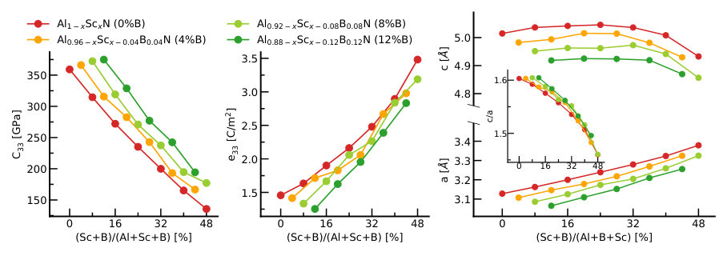
<figcaption class="paper-figure-caption"><b>Fig 1.</b> Figure 1: Evolution of properties with varying cation substitution, varying colors relate to the fixed content of boron within those series. Left panel is the 33 component in the Voigt notation of the stiffness tensor, middle panel is the 33 component of the piezoelectric stress tensor and right panel presents lattice parameters of the wurtzite alongside their ratio in the inset</figcaption>
</figure>
<figure class="paper-figure-card">
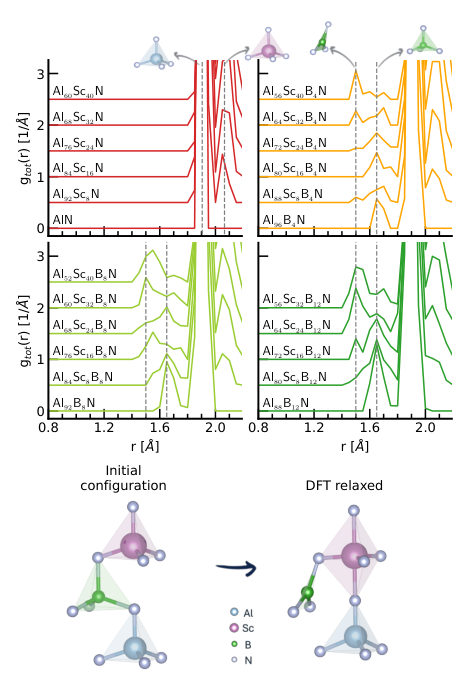
<figcaption class="paper-figure-caption"><b>Fig 2.</b> Figure 2: Upper panel presents the low-r portion of the total pair distribution function of the different series, vertical shift is applied with increased Sc content. Lower panel is schematic representation of the transition from tetrahedral to planar configuration of a B atom.</figcaption>
</figure>
<figure class="paper-figure-card">
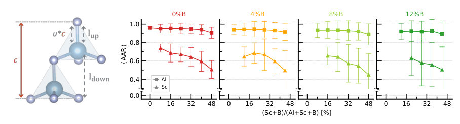
<figcaption class="paper-figure-caption"><b>Fig 3.</b> Figure 3: Left panel presents definition of the distances involved in the definition of the axial asymmetry ratio (AAR). Right panels are the averaged AAR over Sc and Al atoms for each composition. Error bars represent the standard deviation of the corresponding AAR data set.</figcaption>
</figure>
<figure class="paper-figure-card">
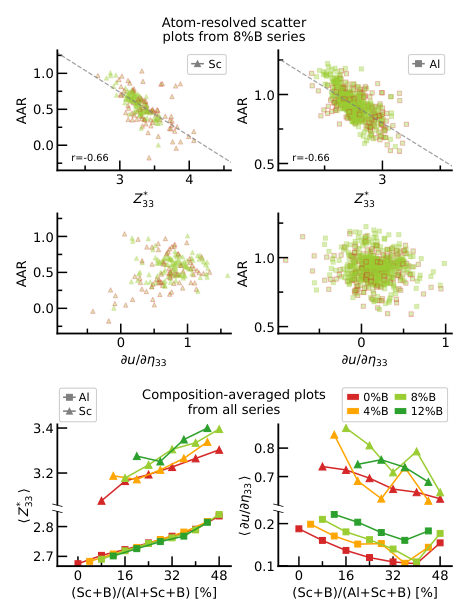
<figcaption class="paper-figure-caption"><b>Fig 4.</b> Figure 4: Upper panel shows correlation between the AAR and both the Z∗ 33 and the duk dη33 of each individual scandium (triangle) and aluminum (square) atoms of the whole 8%B series. Red-edged marker are cations that present a planar B in their second shell. Lower panel presents the evolution of Z∗ 33 and duk dη33 of all series over the alloying range, where each data point is obtained by averaging over all adequate atoms in the structures.</figcaption>
</figure>
<figure class="paper-figure-card">
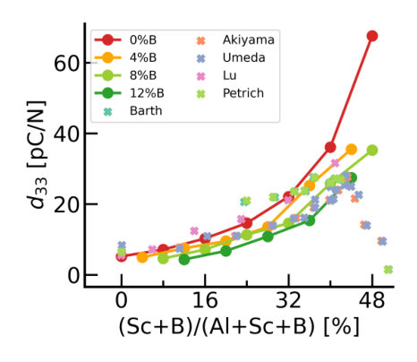
<figcaption class="paper-figure-caption"><b>Fig 5.</b> Figure 5: Evolution of the piezoelectric strain response tensor component d33 with respect to composi- tion for all four series. Colored cross markers are experimental data from AlScN samples[3, 1, 28, 19, 22]</figcaption>
</figure>
</div>
<p><strong>Summary.</strong> This theoretical study investigates how boron doping affects the mechanical and piezoelectric properties of AlScN. The authors find that the piezoelectric response is enhanced by the symmetrization of the Sc environment, while the stiffness is maintained by local structural changes involving boron. They establish a clear decoupling between these two properties, attributing it to distinct structural mechanisms governing each response.</p>
<p><strong>Why it may be interesting.</strong> While the core physics is solid-state materials science, the rigorous quantification of local structural descriptors (AAR) and their correlation with macroscopic tensor components ($e_{33}$) provides a transferable methodology for understanding symmetry breaking and emergent properties in complex crystal structures.</p>
<details>
<summary>Detailed structure</summary>
<p><strong>Main problem.</strong> The study aims to elucidate the structural origin of the decoupling between the stiffness component ($C_{33}$) and the piezoelectric response ($e_{33}$) when boron (B) is incorporated into the wurtzite pseudo-ternary (Al,Sc,B)N.</p>
<p><strong>Main result.</strong> The decoupling is attributed to the local structural effect of boron atoms moving to a threefold-coordinated, planar configuration, while the piezoelectric enhancement is linked to the progressive symmetrization of the Sc environment, quantified by the Axial Asymmetry Ratio (AAR).</p>
<p><strong>Method.</strong> The research employs first-principles calculations using DFT (PBE functional) on 100-atom special quasirandom structures, analyzing local geometry via pair distribution functions and quantifying asymmetry using the site-specific Axial Asymmetry Ratio (AAR).</p>
<p><strong>Model / system.</strong> The physical system is the wurtzite pseudo-ternary (Al,Sc,B)N alloy. The analysis focuses on how B incorporation modifies the local coordination environment of Al and Sc cations.</p>
<p><strong>Key observables.</strong> Stiffness component $C_{33}$, piezoelectric stress tensor component $e_{33}$ (or $d_{33}$), Axial Asymmetry Ratio (AAR), Born effective charges ($Z^*_{33}$), and local bond lengths.</p>
<p><strong>Important parameters / regimes.</strong> Boron concentration (B content), lattice parameters ($c/a$ ratio), and the degree of cation environment asymmetry.</p>
<p><strong>Assumptions / limitations.</strong> The study uses 100-atom SQSs, and the authors note that the observed decoupling intensity might differ from previous work due to methodological differences.</p>
<p><strong>Figures summary.</strong> Figures illustrate the evolution of $C_{33}$ and $e_{33}$ with B content, pair distribution functions showing B structural changes, and scatter plots correlating AAR with $Z^*_{33}$ and strain sensitivity for individual atoms (Al, Sc, N).</p>
<p><strong>Paper structure.</strong> The paper systematically analyzes the structural changes induced by B doping, correlates these changes (measured by AAR) with electronic properties ($Z^*_{33}$), and then separates the mechanisms governing stiffness ($C_{33}$) versus piezoelectricity ($e_{33}$) to explain the observed decoupling.</p>
</details>
<details>
<summary>Abstract</summary>
<p>We present a first-principles analysis of the wurtzite pseudo-ternary (Al,Sc,B)N to elucidate the structural origin of a decoupling between stiffness $C_{33}$ and piezoelectric response $e_{33}$ upon boron incorporation, using DFT-relaxed 100-atom special quasirandom structures across a broad composition range. Pair distribution function analysis reveals interstitial threefold-coordinated boron atoms that have displaced from the tetrahedral cation site. Direct structural analysis establishes their preferential orientation along the $c$-axis and identifies a scandium-activated creation mechanism. The vertical coordination asymmetry of each cation is quantified through a site-specific axial asymmetry ratio (AAR), showing that boron incorporation progressively symmetrizes the Sc environment. Correlation with Born effective charges demonstrates that this symmetrization is the mechanism behind the piezoelectric enhancement.</p>
</details>
<p><sub><a href="#top">↑ back to top</a></sub></p>

<p><a id="paper-2605.16106"></a></p>
<h3 id="long-range-magnetic-ordering-and-structural-phase-transition-in-disordered-high-entropy-spinel-chromites"><a href="http://arxiv.org/abs/2605.16106v1">Long-range magnetic ordering and structural phase transition in disordered high-entropy spinel chromites</a></h3>
<p><strong>Authors:</strong> Sushanta Mandal, Koushik Chakraborty, Isha, Arvind Kumar Yogi, S. D. Kaushik, Sourav Marik, Tirthankar Chakraborty<br>
<strong>Type:</strong> experiment · <strong>Category:</strong> statistical mechanics · <strong>PDF:</strong> <a href="https://arxiv.org/pdf/2605.16106v1">https://arxiv.org/pdf/2605.16106v1</a><br>
<strong>Analysis basis:</strong> full PDF text, analyzed in chunks</p>
<div class="figure-strip-hint">↔ Scroll figures horizontally</div>
<div class="paper-figures-scroll">
<figure class="paper-figure-card">
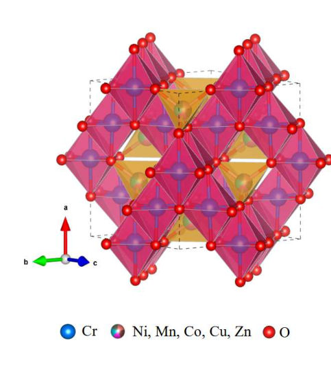
<figcaption class="paper-figure-caption"><b>Fig 1.</b> FIG. 1: Crystal structure of (Mn0.2Co0.2Ni0.2Cu0.2Zn0.2)Cr2O4. Here, the A-site (Mn, Ni, Co, Cu, Zn) occupies the tetrahedral position, and the B-site (Cr) occupies the octahedral position.</figcaption>
</figure>
<figure class="paper-figure-card">
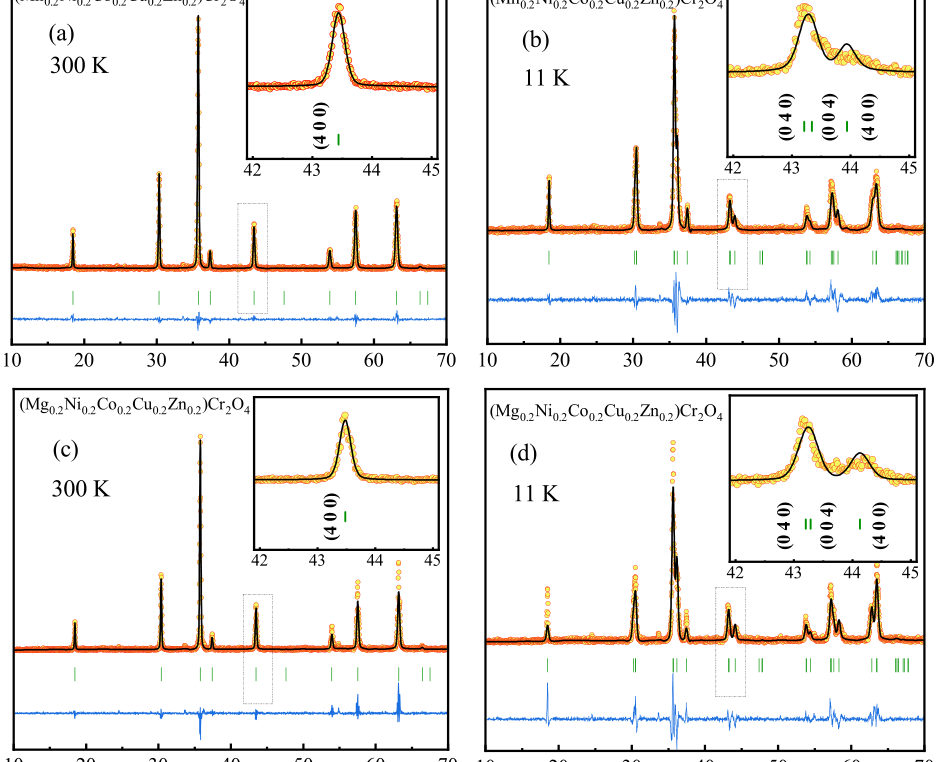
<figcaption class="paper-figure-caption"><b>Fig 2.</b> FIG. 2: X-ray diffraction patterns of (Mn0.2Co0.2Ni0.2Cu0.2Zn0.2)Cr2O4 at (a) 300 K and (b) 11 K, and (Mg0.2Co0.2Ni0.2Cu0.2Zn0.2)Cr2O4 at (c) 300 K and (d) 11 K. Insets in each graph show an enlarged view of the selec- tive peak splitting, where the (4 0 0) peak of the cubic phase splits into (0 4 0), (0 0 4), and (4 0 0) peaks of the orthorhombic phase.</figcaption>
</figure>
<figure class="paper-figure-card">
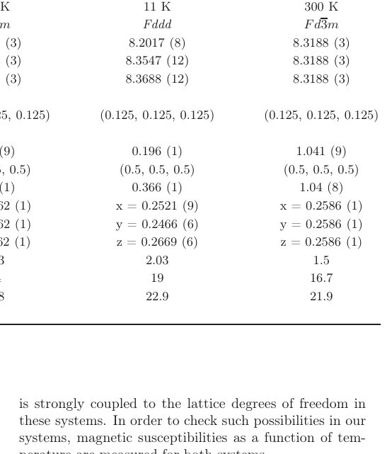
<figcaption class="paper-figure-caption"><b>Fig 3.</b> Figure 7(left axis) shows the field-cooled (FC) mag- netic susceptibility as a function of temperature, mea- sured under an applied magnetic field of 0.1 T over the temperature range 4-100 K. The temperature-dependent magnetic susceptibility shows a rapid increase at 49 K for (Mn0.2Co0.2Ni0.2Cu0.2Zn0.2)Cr2O4 and at 35 K for (Mg0.2Co0.2Ni0.2Cu0.2Zn0.2)Cr2O4 , corresponding to a paramagnetic to antiferromagnetic transition. The mag- netic transition temperatures are determined from the derivative dχ/dT and are presented in Figure 7(right axis). The sharp peak in dχ/dT provides estimated of TN, for 49 K and 35 K respectively. It is worth noting that in systems such as CuCr2O4 and NiCr2O4, which...</figcaption>
</figure>
<figure class="paper-figure-card">
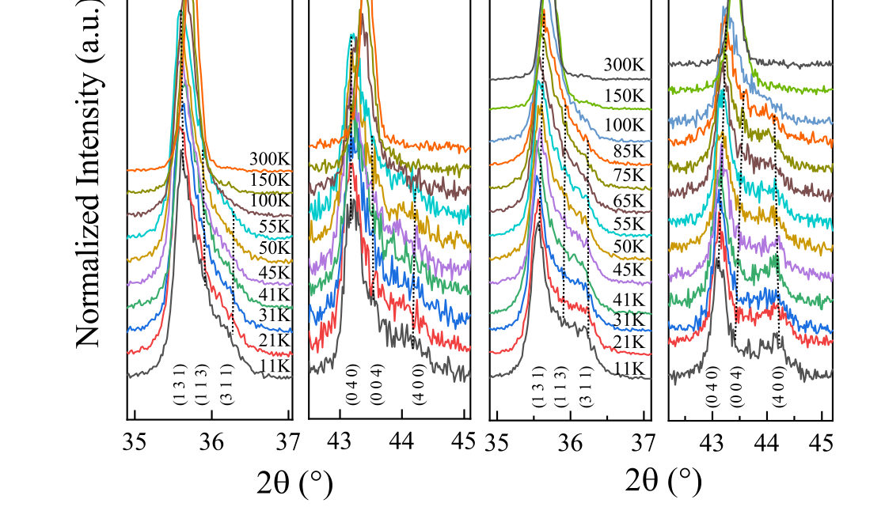
<figcaption class="paper-figure-caption"><b>Fig 4.</b> FIG. 3: Temperature evolution of XRD patterns for selected peaks of (Mn0.2Co0.2Ni0.2Cu0.2Zn0.2)Cr2O4 and (Mg0.2Co0.2Ni0.2Cu0.2Zn0.2)Cr2O4 : (a) The (3 1 1) reflection in the cubic phase splits into (1 1 3), (1 3 1), and (3 1 1) in the orthorhombic phase. (b) The (4 0 0) reflection in the cubic phase splits into (0 4 0), (0 0 4), and (4 0 0) in the orthorhombic phase of (Mn0.2Co0.2Ni0.2Cu0.2Zn0.2)Cr2O4 . Similar peak splitting for (Mg0.2Co0.2Ni0.2Cu0.2Zn0.2)Cr2O4 is shown in (c) and (d).</figcaption>
</figure>
<figure class="paper-figure-card">
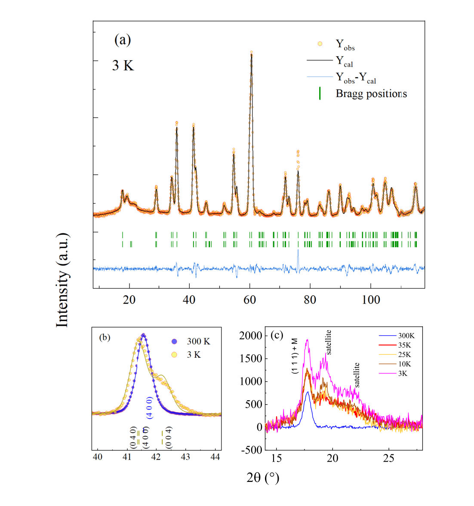
<figcaption class="paper-figure-caption"><b>Fig 5.</b> FIG. 4: (a) Rietveld refinement of the neutron powder diffraction pattern at 3 K for (Mn0.2Co0.2Ni0.2Cu0.2Zn0.2)Cr2O4 , showing observed intensity, calculated pattern, difference profile, and Bragg positions corresponding to nuclear and magnetic reflections. (b) show the enlarged (4 0 0) reflection at 300 K as a single cubic peak (blue circle). At 3 K, this peak splits into orthorhombic (0 4 0), (4 0 0), and (0 0 4) reflections, accompanied by the appearance of magnetic Bragg peaks. This confirms magnetically driven symmetry lowering from cubic to orthorhombic. (c) Temperature-dependent neutron diffraction patterns for (Mn0.2Co0.2Ni0.2Cu0.2Zn0.2)Cr2O4 showing the evolution of magnetic Bragg...</figcaption>
</figure>
</div>
<p><strong>Summary.</strong> This work investigates the structural and magnetic properties of disordered high-entropy spinel chromites. Using neutron and X-ray diffraction, the authors confirm that these materials exhibit both long-range antiferromagnetic ordering and structural phase transitions. The key finding is that these characteristic transitions persist despite high chemical disorder, suggesting that configurational entropy plays a role in stabilizing the ordered state.</p>
<p><strong>Why it may be interesting.</strong> The persistence of long-range order and characteristic phase transitions in the presence of significant chemical disorder provides insights into how entropy can stabilize complex magnetic and structural ground states, which has implications for understanding correlated materials.</p>
<details>
<summary>Detailed structure</summary>
<p><strong>Main problem.</strong> The study investigates the interplay between structural phase transitions and long-range magnetic ordering in disordered high-entropy spinel chromites.</p>
<p><strong>Main result.</strong> Both high-entropy systems exhibit long-range magnetic order and undergo structural transitions to a lower symmetry, suggesting that high configurational entropy stabilizes the structure despite chemical disorder.</p>
<p><strong>Method.</strong> The research employed a combination of Powder X-ray Diffraction (P-XRD), Neutron Diffraction (NPD), and magnetic susceptibility measurements across varying temperatures.</p>
<p><strong>Model / system.</strong> The physical system consists of Cr-based high-entropy spinel oxides, specifically $(	ext{Mn}_{0.2}	ext{Co}_{0.2}	ext{Ni}_{0.2}	ext{Cu}_{0.2}	ext{Zn}_{0.2})	ext{Cr}_2	ext{O}_4$ and $(	ext{Mg}_{0.2}	ext{Co}_{0.2}	ext{Ni}_{0.2}	ext{Cu}_{0.2}	ext{Zn}_{0.2})	ext{Cr}_2	ext{O}_4$. These materials are characterized by significant chemical disorder at the A-site.</p>
<p><strong>Key observables.</strong> Structural symmetry (cubic $Fdar{3}m$ to orthorhombic $Fddd$), Néel temperatures ($T_N$), lattice parameters, and magnetic Bragg reflections.</p>
<p><strong>Important parameters / regimes.</strong> Transition temperatures ($\sim 55 	ext{ K}$ and $\sim 85 	ext{ K}$ for structure; $49 	ext{ K}$ and $35 	ext{ K}$ for magnetism); high configurational entropy regime.</p>
<p><strong>Assumptions / limitations.</strong> The analysis assumes that the observed transitions are analogous to those in low-entropy spinels, and that the structural stabilization is promoted by high configurational entropy.</p>
<p><strong>Figures summary.</strong> Figures show XRD/NPD peak splitting confirming symmetry reduction, temperature dependence of lattice parameters, and magnetic susceptibility measurements indicating antiferromagnetic ordering.</p>
<p><strong>Paper structure.</strong> The paper systematically analyzes the temperature evolution of structural and magnetic properties using NPD and XRD. It establishes the room-temperature cubic phase, confirms long-range magnetic order below $T_N$, and details the structural phase transitions to the orthorhombic phase, concluding with the role of high entropy.</p>
</details>
<details>
<summary>Abstract</summary>
<p>High-entropy spinel oxides provide an excellent platform for investigating entropy-stabilized correlated systems with strong configurational disorder. In this work, we systematically study the temperature evolution of the structural and magnetic properties of Cr-based high-entropy spinels with compositions $(Mn_{0.2}Co_{0.2}Ni_{0.2}Cu_{0.2}Zn_{0.2})Cr_2O_4$ and $(Mg_{0.2}Co_{0.2}Ni_{0.2}Cu_{0.2}Zn_{0.2})Cr_2O_4$. Our results reveal that both systems crystallize in cubic structure with space group \textit{$Fd\overline{3}m$} at room temperature. Each system undergoes antiferromagnetic ordering below the Néel temperatures $ T_N$ = 49 K and 35 K, respectively. Neutron diffraction measurements confirm the emergence of long-range magnetic order with spiral spin arrangement. Both systems exhibit a structural phase transition from cubic \textit{$Fd\overline{3}m$} to orthorhombic \textit{Fddd} symmetry at approximately 55 K and 85 K, respectively. Notably, despite the significant chemical disorder at the A site, both systems undergo transitions analogous to those observed in low entropy spinel systems. This behavior suggests that high configurational entropy may promote global structural stabilization despite local chemical disorder, thereby preserving long-range orderings and the characteristic symmetry-breaking transitions of the pristine spinel systems.</p>
</details>
<p><sub><a href="#top">↑ back to top</a></sub></p>

<p><a id="paper-2605.15544"></a></p>
<h3 id="p-wave-orbital-angular-momentum-texture-in-a-chiral-crystal"><a href="http://arxiv.org/abs/2605.15544v1">p-Wave Orbital Angular Momentum Texture in a Chiral Crystal</a></h3>
<p><strong>Authors:</strong> Dongjin Oh, Chiara Pacella, Xiangyu Luo, Chris Jozwiak, Aaron Bostwick, Eli Rotenberg, Mats Leandersson, Craig Polley, Angel Rubio, Domenico Di Sante, Riccardo Comin<br>
<strong>Type:</strong> both · <strong>Category:</strong> other · <strong>PDF:</strong> <a href="https://arxiv.org/pdf/2605.15544v1">https://arxiv.org/pdf/2605.15544v1</a><br>
<strong>Analysis basis:</strong> full PDF text, analyzed in chunks</p>
<div class="figure-strip-hint">↔ Scroll figures horizontally</div>
<div class="paper-figures-scroll">
<figure class="paper-figure-card">
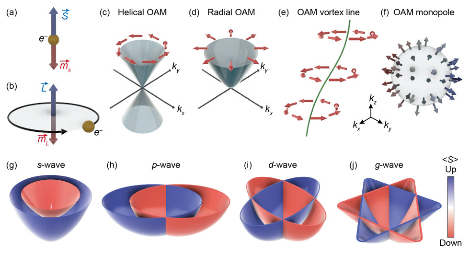
<figcaption class="paper-figure-caption"><b>Fig 1.</b> FIG. 1. ⃗k-space SAM and OAM textures in solids. (a,b) Illustrations of SAM (a) and OAM (b) of an electron (yellow spheres). Blue and red arrows represent angular momenta (⃗S and ⃗L) and their corresponding magnetic moments (⃗ms and ⃗mL), respectively. (c-f) Various ⃗k-space OAM textures: helical OAM texture (c); radial OAM texture (d); OAM vortex line (e); and OAM monopole (f). (g-j) ⃗k-dependent SAM textures in magnets with multipolar symmetry form factors: s- (g); p- (h); d- (i); and g-wave SAM textures (j). Blue and red colors denote spin-up and spin-down polarizations, respectively.</figcaption>
</figure>
<figure class="paper-figure-card">
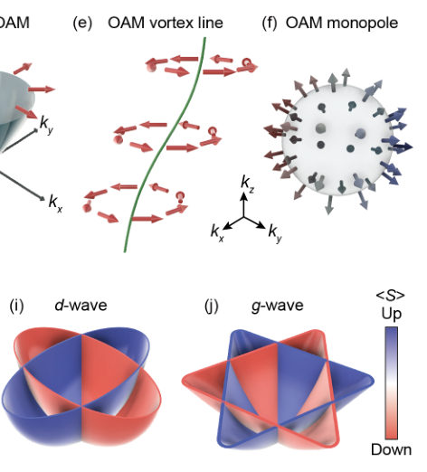
<figcaption class="paper-figure-caption"><b>Fig 2.</b> Figure 2(a) illustrates the crystal structure of (TaSe4)2I, which features a highly anisotropic 1D chain composed of Ta and Se atoms aligned along the x-axis. Notably, the Se atoms form a helical structure that wraps around the central 1D Ta chain, as illustrated in Figs. 2(a) and 2(b). The room temperature metallic elec- tronic structure of (TaSe4)2I in the low energy range, characterized by linear band crossings, contains contri- butions from both Se 4p and Ta 5d orbital characters (see Fig. S1 in Supplemental Material) [31]. To experimentally probe the OAM texture in this system, we carried out CD-ARPES experiments on (TaSe4)2I single crystals. Recent experimental and theoretical...</figcaption>
</figure>
<figure class="paper-figure-card">
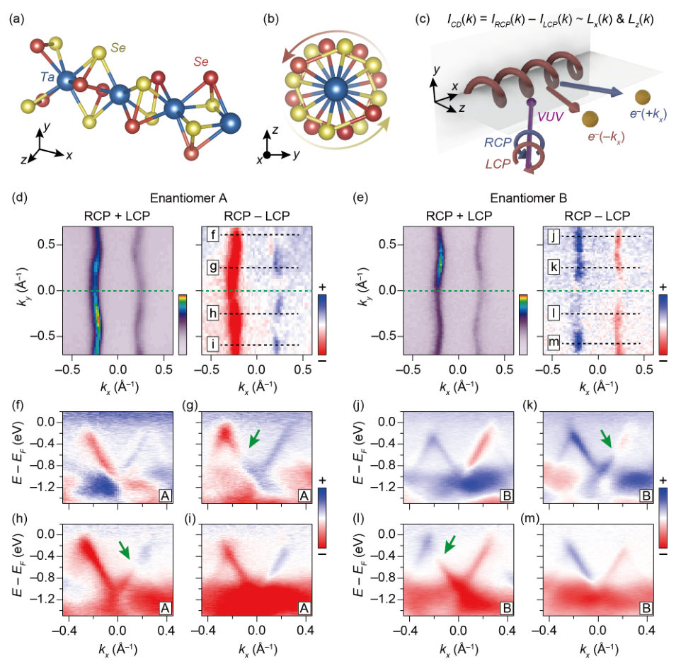
<figcaption class="paper-figure-caption"><b>Fig 3.</b> FIG. 2. CD-ARPES of (TaSe4)2I. (a) 1D chiral chain structure composed of Se (red and yellow spheres) and Ta (blue sphere) atoms. (b) x-axis view of the crystal structure of (TaSe4)2I. Transparency of the sphere reflects the atomic height along x- direction. (c) Experimental geometry of CD-ARPES. (d,e) Constant energy contour maps of enantiomer A (d) and enantiomer B (e) obtained at E = −0.25 eV with 75 eV photon energy. The left and right panels of (d) and (e) show polarization-integrated and CD photoelectron intensities, respectively. The green dashed lines indicate the plane of incidence of the experimental geometry. (f-m) CD-ARPES spectra of enantiomer A (f-i) and enantiomer B (j-m),...</figcaption>
</figure>
<figure class="paper-figure-card">
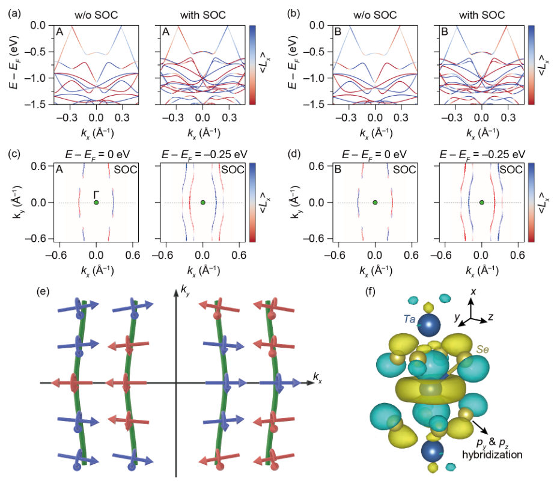
<figcaption class="paper-figure-caption"><b>Fig 4.</b> FIG. 3. p-wave OAM texture in (TaSe4)2I. (a,b) x-component of OAM (Lx) textures in the energy-momentum dispersion of enantiomer A (a), and B (b), extracted at ky = 0 Å−1. Left and right panels in (a) and (b) show results without and with SOC, respectively. (c,d) Lx textures of enantiomer A (c) and B (d) in the kx-ky plane. Left and right panels illustrate constant energy contours at E −EF = 0 eV and −0.25 eV, respectively. (e) Schematic illustration of ⃗k-space OAM texture. Green solid curves represent the electronic bands of (TaSe4)2I in kx-ky plane. Red and blue arrows indicate negative and positive Lx, respectively. The momentum spacing between the inner and outer bands is exaggerated...</figcaption>
</figure>
<figure class="paper-figure-card">
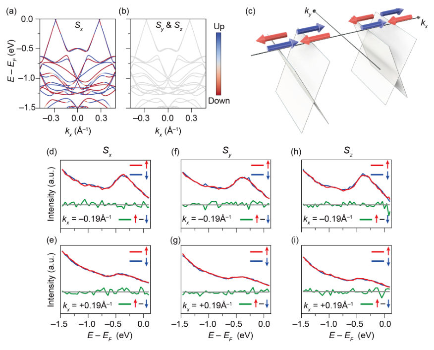
<figcaption class="paper-figure-caption"><b>Fig 5.</b> FIG. 4. SAM texture in (TaSe4)2I. (a,b) ⃗k-space SAM texture of (TaSe4)2I at ky = 0 Å−1, projected onto the x-component of SAM, Sx, (a) and y- and z-components, Sy and Sz, (b). (c) Schematic illustration of the ⃗k-space SAM texture in the low-energy electronic states of TaSe4)2I. Grey planes indicate the linearly dispersing bands. Red and blue arrows correspond to positive and negative Sx, respectively. (d-i) Spin-resolved ARPES (SARPES) spectra of (TaSe4)2I. (d) and (e) show spin-resolved energy distribution curves (SEDCs) projected onto Sx, collected at ∓0.19 Å−1, respectively. (f) and (g), as well as (h) and (i), display the same SEDCs, but projected onto the Sy and Sz spin components,...</figcaption>
</figure>
</div>
<p><strong>Summary.</strong> This paper reports the experimental and theoretical discovery of a p-wave Orbital Angular Momentum (OAM) texture in the chiral crystal (TaSe4)2I. Using CD-ARPES, the authors show that OAM, not SAM, governs the low-energy electronic structure, and this OAM texture is directly controlled by the crystal's inherent chirality. This work pioneers a new field, 'spinless orbitronics,' by demonstrating a robust platform for manipulating orbital angular momentum in solids.</p>
<p><strong>Why it may be interesting.</strong> The work establishes a direct, experimentally verifiable link between structural chirality and a specific, measurable orbital texture (p-wave OAM), providing a solid foundation for engineering orbital degrees of freedom in solid-state devices.</p>
<details>
<summary>Detailed structure</summary>
<p><strong>Main problem.</strong> The study investigates the role and texture of Orbital Angular Momentum (OAM) in condensed matter systems, particularly in chiral crystals, to establish a platform for 'spinless orbitronics.'</p>
<p><strong>Main result.</strong> The authors uncovered a p-wave OAM texture in the chiral crystal (TaSe4)2I, demonstrating that OAM polarization dominates low-energy electronic properties and is controllable by the material's structural chirality.</p>
<p><strong>Method.</strong> The research combines experimental measurements using Circular-dichroism Angle-Resolved Photoemission Spectroscopy (CD-ARPES) with complementary first-principles DFT calculations.</p>
<p><strong>Model / system.</strong> The physical system is the one-dimensional chiral crystal (TaSe4)2I. The analysis focuses on the momentum-space OAM texture, comparing it to Spin Angular Momentum (SAM) textures.</p>
<p><strong>Key observables.</strong> p-wave OAM texture, OAM dipole structures, enantiomer-dependent CD signals, and the relative magnitude of OAM vs. SAM polarization.</p>
<p><strong>Important parameters / regimes.</strong> Low-energy electronic states, structural chirality, and the temperature regime (room temperature, avoiding CDW transition).</p>
<p><strong>Assumptions / limitations.</strong> The observed CD signals are assumed to be dominated by intrinsic electronic contributions, and the SAM contribution is found to be negligible at room temperature.</p>
<p><strong>Figures summary.</strong> Figures illustrate k-space SAM and OAM textures, the crystal structure, and constant energy contour maps showing enantiomer-specific CD photoelectron intensities.</p>
<p><strong>Paper structure.</strong> The paper progresses by first introducing the concept of OAM in chiral systems, presenting CD-ARPES evidence of the p-wave OAM texture linked to chirality, confirming this with first-principles calculations, and concluding by establishing the material as a platform for spinless orbitronics.</p>
</details>
<details>
<summary>Abstract</summary>
<p>The spin and orbital angular momentum (SAM and OAM) are conceptually analogous, yet their roles in condensed matter systems have not been often treated on equal footing. While SAM has been extensively explored, OAM has long been regarded as quenched in crystalline environments and thus largely overlooked. Recent experimental and theoretical advances, however, have demonstrated that OAM can drive a variety of novel electronic phenomena, highlighting the importance of probing OAM textures in the electronic band structure. Here, we investigate the momentum-space OAM texture of (TaSe4)2I, a one-dimensional chiral crystal. Using circular-dichroism angle-resolved photoemission spectroscopy (CD-ARPES), we uncover a p-wave OAM texture accompanied by OAM dipole structures. This orbital p-wave texture is intimately connected to, and thus controllable by the chirality of the host lattice. Complementary spin-resolved ARPES measurements and first-principles calculations reveal that the OAM polarization overwhelmingly dominates the low-energy electronic properties of (TaSe4)2I, far exceeding the SAM polarization. These observations represent the experimental verification of a new type of OAM texture in crystalline materials. Most importantly, these findings underscore a promising material platform for spinless orbitronics applications and lay the foundation for realizing multipolar OAM textures-orbital counterparts of the spin texture in unconventional magnets.</p>
</details>
<p><sub><a href="#top">↑ back to top</a></sub></p>

<p><a id="paper-2605.15389"></a></p>
<h3 id="radio-frequency-reflectometry-in-silicon-carbide-large-area-transistors"><a href="http://arxiv.org/abs/2605.15389v1">Radio-frequency reflectometry in silicon carbide large-area transistors</a></h3>
<p><strong>Authors:</strong> Alexander Zotov, Conor McGeough, Megan Powell, Alessandro Rossi<br>
<strong>Type:</strong> experiment · <strong>Category:</strong> other · <strong>PDF:</strong> <a href="https://arxiv.org/pdf/2605.15389v1">https://arxiv.org/pdf/2605.15389v1</a><br>
<strong>Analysis basis:</strong> full PDF text, analyzed in chunks</p>
<div class="figure-strip-hint">↔ Scroll figures horizontally</div>
<div class="paper-figures-scroll">
<figure class="paper-figure-card">
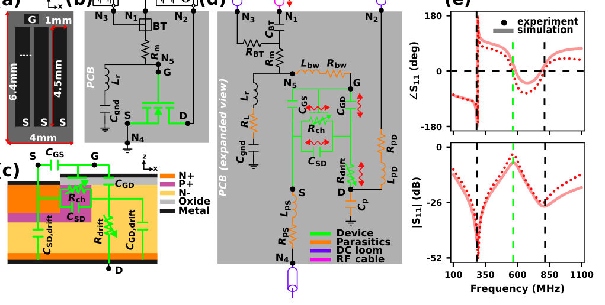
<figcaption class="paper-figure-caption"><b>Fig 1.</b> FIG. 1. (a) Schematic drawing (not to scale) of the bare-die commercial chip containing the DUT (Wolfspeed CPM2-1200- 0025A), showing the source (S) and gate (G) metal pads on the top surface; the drain (D) contact occupies the full backside of the die and is not shown. (b) Simplified PCB layout and measurement set-up for combined DC transport and RF reflectometry. The RF excitation and DC gate bias are combined through a bias tee (BT). (c) Cross-sectional schematic of the vertical MOSFET along dashed white line in panel (a), with small-signal elements overlaid, indicating the physical origin of the capacitances and resistances included in the model. Rdrift is an effective resistance that...</figcaption>
</figure>
<figure class="paper-figure-card">
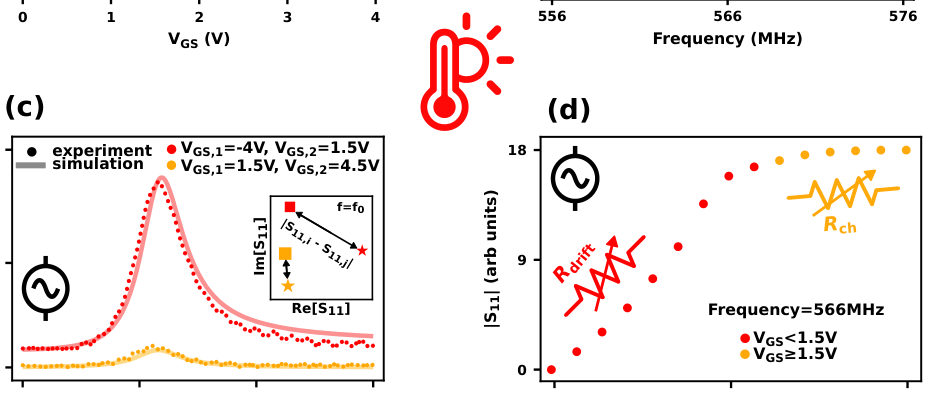
<figcaption class="paper-figure-caption"><b>Fig 2.</b> FIG. 2. (a) DC transfer characteristics measured at room temperature and VDS = 50 µV, showing the onset of transport through the channel at V RT th ≈1.5 V. (b) Magnitude of the measured reflection coefficient |S11| at room temperature for VGS = 0 V and VGS = 4.5 V, including repeats. (c) Frequency-dependent magnitude of the change in the reflection coefficient, |∆S11| (with offset for clarity), probing the gate effect for voltages smaller (red) and larger (orange) than threshold voltage at room temperature. Dots show experimental data and solid lines show the corresponding circuit simulations. In the simulations, the resistive elements of the DUT varied as follows: for VGS &lt; V RT th , Rch =...</figcaption>
</figure>
<figure class="paper-figure-card">
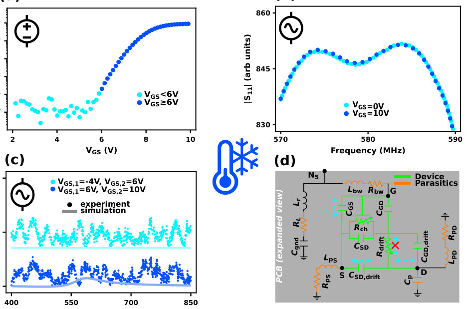
<figcaption class="paper-figure-caption"><b>Fig 3.</b> FIG. 3. (a) DC transfer characteristic measured at T = 28 K and VDS = 10 mV, showing gate-controlled turn-on and V cryo th ≈6 V. (b) Magnitude of the reflection coefficient for VGS = 0 V and VGS = 10 V, T = 28 K. (c) Frequency dependent magnitude of the change in the reflection coefficient, |∆S11| (with offset for clarity), probing the gate effect for voltages smaller (light blue) and larger (dark blue) than threshold voltage at T = 28 K. Dots show experimental data and solid lines show the corresponding circuit simulations. In the simulations, the resistive elements of the DUT varied as follows: for VGS &lt; V cryo th , Rch = 10 MΩand 3.4 kΩ&lt; Rdrift &lt; 8.6 kΩ; for VGS &gt; V cryo th , Rdrift =...</figcaption>
</figure>
<figure class="paper-figure-card">
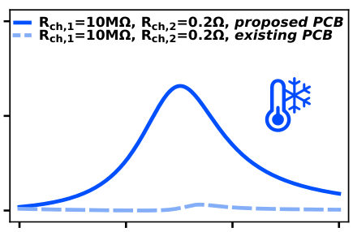
<figcaption class="paper-figure-caption"><b>Fig 4.</b> FIG. 4. (a) Schematic of the modified PCB configuration, in which additional components (pink) are introduced to redistribute the RF current through gate-dependent DUT impedances. At each of the source and drain nodes, a ca- pacitor provides a resonant RF path with Lr, while an in- ductor acts as an RF choke. (b) Simulated magnitude of the change in the reflection coefficient, |S11,i −S11,j|, for the original PCB configuration (dashed line) and the proposed configuration (solid line), evaluated for a change in channel resistance 0.2 Ω&lt; Rch &lt; 10 MΩ. Other parameters used in the simulations are Lr = 4 nH, CrS = CrD = 11 pF, LbS = LbD = 500 nH.</figcaption>
</figure>
<figure class="paper-figure-card">
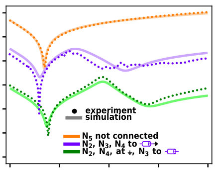
<figcaption class="paper-figure-caption"><b>Fig 5.</b> FIG. 5. Measured magnitude of the reflection coefficient |S11| at room temperature (dots) for different grounding configura- tions tested (color coded), and associated circuit simulations (solid lines). Traces are shifted vertically for clarity.</figcaption>
</figure>
</div>
<p><strong>Summary.</strong> This paper demonstrates RF reflectometry on large-area SiC transistors, showing that while the technique works well at room temperature, cryogenic cooling causes the signal to vanish due to carrier freeze-out increasing device resistance. The authors propose and validate a modified circuit design that successfully restores the RF readout sensitivity under these challenging low-temperature conditions.</p>
<p><strong>Why it may be interesting.</strong> While the focus is on solid-state electronics, the methodology of using high-frequency impedance measurements to probe subtle changes in resistive/capacitive coupling at cryogenic temperatures is relevant to characterizing quantum interfaces and superconducting circuits.</p>
<details>
<summary>Detailed structure</summary>
<p><strong>Main problem.</strong> The study investigates the feasibility and limitations of using radio-frequency (RF) reflectometry to read out the electrical state of large-area silicon carbide (SiC) transistors at cryogenic temperatures.</p>
<p><strong>Main result.</strong> RF readout sensitivity degrades significantly at low temperatures due to carrier freeze-out increasing the drift region resistance, but a modified circuit configuration can restore sensitivity by redirecting the RF current path.</p>
<p><strong>Method.</strong> The authors combine DC transport measurements with RF reflectometry using a Vector Network Analyzer (VNA) and analyze the reflection coefficient magnitude (|S11|) across varying gate voltages and temperatures.</p>
<p><strong>Model / system.</strong> The physical system is a large-area, vertical 4H-SiC MOSFET. The analysis relies on a lumped-element equivalent circuit model that incorporates device parasitics, interconnects, and temperature-dependent carrier freeze-out effects.</p>
<p><strong>Key observables.</strong> Reflection coefficient magnitude (|S11|), DC transfer characteristics (Id vs Vgs), and the change in |S11| ($\Delta |S11|$).</p>
<p><strong>Important parameters / regimes.</strong> Cryogenic temperature (28 K), resonant frequency ($\approx 566$ MHz), and the ratio of parasitic capacitances to device capacitances.</p>
<p><strong>Assumptions / limitations.</strong> The analysis assumes that the RF current path is dominated by changes in the effective resistance of the drift region at low temperatures, and that parasitic elements can be accurately modeled.</p>
<p><strong>Figures summary.</strong> Figures illustrate the schematic setup, the measured |S11| response vs. Vgs at room temperature, and the comparison between the original and proposed circuit configurations for restoring sensitivity.</p>
<p><strong>Paper structure.</strong> The paper proceeds by establishing the baseline RF readout at room temperature, demonstrating sensitivity to gate voltage. It then shows the temperature-dependent degradation of this signal, attributing it to carrier freeze-out. Finally, it proposes and validates a modified circuit design to overcome this cryogenic limitation.</p>
</details>
<details>
<summary>Abstract</summary>
<p>Radio-frequency (RF) reflectometry is widely used for high-bandwidth readout of semiconductor quantum devices at cryogenic temperatures, but its application has mainly been limited to nanoscale structures with relatively small capacitances. Here, we investigate RF readout in a different regime by applying gate-based reflectometry to a large-area silicon carbide transistor with parasitic capacitances orders of magnitude larger than those of typical quantum devices, conditions normally expected to hinder RF readout. We observe a gate-dependent RF response which degrades and eventually vanishes as temperature is lowered, although MOSFET operation in DC transport is maintained down to deep cryogenic temperatures. We attribute this behaviour to impedance changes introduced by carrier freeze-out in the transistor drift region, and propose a modified circuit configuration designed to restore sensitivity under these conditions. These results establish how parasitic pathways and device geometry can limit RF readout, providing insight into the design of scalable cryogenic-CMOS quantum systems.</p>
</details>
<p><sub><a href="#top">↑ back to top</a></sub></p>
</details>

<hr>
<p>
<a href="index.html">← Index</a>
 · <a href="papers_06.html">← Previous</a>
</p>
<hr>

</body>
</html>
